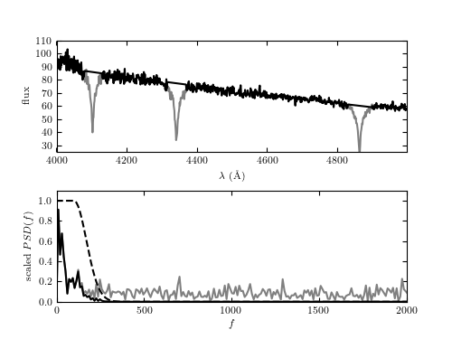

Minimum component fitting procedure¶
Figure 10.12
The intermediate steps of the minimum component filter procedure applied to the spectrum of a white dwarf from the SDSS data set (mjd= 52199, plate=659, fiber=381). The top panel shows the input spectrum; the masked sections of the input spectrum are shown by thin lines (i.e., step 1 of the process in Section 10.2.5). The bottom panel shows the PSD of the masked spectrum, after the linear fit has been subtracted (gray line). A simple low-pass filter (dashed line) is applied, and the resulting filtered spectrum (dark line) is used to construct the result shown in figure 10.13.
Minimum component filtering is explained in Wall & Jenkins, as well as Wall 1997, A&A 122:371. The minimum component algorithm is implemented in astroML.filters.min_component_filter
{kind=link}
Downloading http://das.sdss.org/spectro/1d_26/0659/1d/spSpec-52199-0659-381.fit
[= ] 4.6kb / 182.8kb
[== ] 9.1kb / 182.8kb
[=== ] 13.7kb / 182.8kb
[==== ] 18.3kb / 182.8kb
[===== ] 22.9kb / 182.8kb
[====== ] 27.4kb / 182.8kb
[======= ] 32.0kb / 182.8kb
[======== ] 36.6kb / 182.8kb
[========= ] 41.1kb / 182.8kb
[========== ] 45.7kb / 182.8kb
[=========== ] 50.3kb / 182.8kb
[============ ] 54.8kb / 182.8kb
[============= ] 59.4kb / 182.8kb
[============== ] 64.0kb / 182.8kb
[=============== ] 68.6kb / 182.8kb
[================ ] 73.1kb / 182.8kb
[================= ] 77.7kb / 182.8kb
[================== ] 82.3kb / 182.8kb
[=================== ] 86.8kb / 182.8kb
[==================== ] 91.4kb / 182.8kb
[===================== ] 96.0kb / 182.8kb
[====================== ] 100.5kb / 182.8kb
[======================= ] 105.1kb / 182.8kb
[======================== ] 109.7kb / 182.8kb
[========================= ] 114.3kb / 182.8kb
[========================== ] 118.8kb / 182.8kb
[=========================== ] 123.4kb / 182.8kb
[============================ ] 128.0kb / 182.8kb
[============================= ] 132.5kb / 182.8kb
[============================== ] 137.1kb / 182.8kb
[=============================== ] 141.7kb / 182.8kb
[================================ ] 146.2kb / 182.8kb
[================================= ] 150.8kb / 182.8kb
[================================== ] 155.4kb / 182.8kb
[=================================== ] 160.0kb / 182.8kb
[==================================== ] 164.5kb / 182.8kb
[===================================== ] 169.1kb / 182.8kb
[====================================== ] 173.7kb / 182.8kb
[=======================================] 178.2kb / 182.8kb
[========================================] 182.8kb / 182.8kb
caching to /Users/bsipocz/astroML_data/SDSSspec/0659/spSpec-52199-0659-381.fit
# Author: Jake VanderPlas
# License: BSD
# The figure produced by this code is published in the textbook
# "Statistics, Data Mining, and Machine Learning in Astronomy" (2013)
# For more information, see http://astroML.github.com
# To report a bug or issue, use the following forum:
# https://groups.google.com/forum/#!forum/astroml-general
import numpy as np
from matplotlib import pyplot as plt
from scipy import fftpack
from astroML.fourier import PSD_continuous
from astroML.datasets import fetch_sdss_spectrum
#----------------------------------------------------------------------
# This function adjusts matplotlib settings for a uniform feel in the textbook.
# Note that with usetex=True, fonts are rendered with LaTeX. This may
# result in an error if LaTeX is not installed on your system. In that case,
# you can set usetex to False.
if "setup_text_plots" not in globals():
from astroML.plotting import setup_text_plots
setup_text_plots(fontsize=8, usetex=True)
#------------------------------------------------------------
# Fetch the spectrum from SDSS database & pre-process
plate = 659
mjd = 52199
fiber = 381
data = fetch_sdss_spectrum(plate, mjd, fiber)
lam = data.wavelength()
spec = data.spectrum
# wavelengths are logorithmically spaced: we'll work in log(lam)
loglam = np.log10(lam)
flag = (lam > 4000) & (lam < 5000)
lam = lam[flag]
loglam = loglam[flag]
spec = spec[flag]
lam = lam[:-1]
loglam = loglam[:-1]
spec = spec[:-1]
#----------------------------------------------------------------------
# First step: mask-out significant features
feature_mask = (((lam > 4080) & (lam < 4130)) |
((lam > 4315) & (lam < 4370)) |
((lam > 4830) & (lam < 4900)))
#----------------------------------------------------------------------
# Second step: fit a line to the unmasked portion of the spectrum
XX = loglam[:, None] ** np.arange(2)
beta = np.linalg.lstsq(XX[~feature_mask], spec[~feature_mask])[0]
spec_fit = np.dot(XX, beta)
spec_patched = spec - spec_fit
spec_patched[feature_mask] = 0
#----------------------------------------------------------------------
# Third step: Fourier transform the patched spectrum
N = len(loglam)
df = 1. / N / (loglam[1] - loglam[0])
f = fftpack.ifftshift(df * (np.arange(N) - N / 2.))
spec_patched_FT = fftpack.fft(spec_patched)
#----------------------------------------------------------------------
# Fourth step: Low-pass filter on the transform
filt = np.exp(- (0.01 * (abs(f) - 100.)) ** 2)
filt[abs(f) < 100] = 1
spec_filt_FT = spec_patched_FT * filt
#----------------------------------------------------------------------
# Fifth step: inverse Fourier transform, and add back the fit
spec_filt = fftpack.ifft(spec_filt_FT)
spec_filt += spec_fit
#----------------------------------------------------------------------
# plot results
fig = plt.figure(figsize=(5, 3.75))
fig.subplots_adjust(hspace=0.35)
ax = fig.add_subplot(211)
ax.plot(lam, spec, '-', c='gray')
ax.plot(lam, spec_patched + spec_fit, '-k')
ax.set_ylim(25, 110)
ax.set_xlabel(r'$\lambda\ {\rm(\AA)}$')
ax.set_ylabel('flux')
ax = fig.add_subplot(212)
factor = 15 * (loglam[1] - loglam[0])
ax.plot(fftpack.fftshift(f),
factor * fftpack.fftshift(abs(spec_patched_FT) ** 1),
'-', c='gray', label='masked/shifted spectrum')
ax.plot(fftpack.fftshift(f),
factor * fftpack.fftshift(abs(spec_filt_FT) ** 1),
'-k', label='filtered spectrum')
ax.plot(fftpack.fftshift(f),
fftpack.fftshift(filt), '--k', label='filter')
ax.set_xlim(0, 2000)
ax.set_ylim(0, 1.1)
ax.set_xlabel('$f$')
ax.set_ylabel('scaled $PSD(f)$')
plt.show()